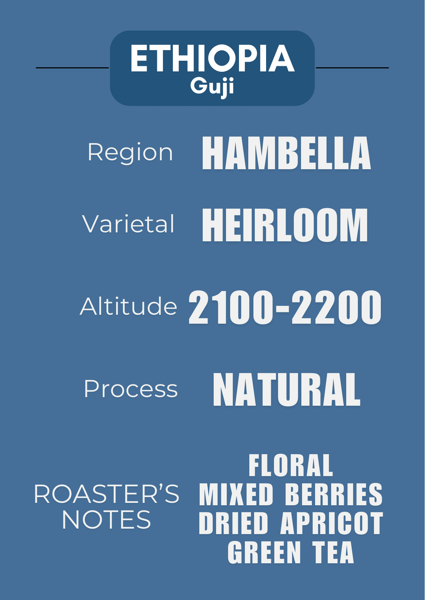

为愿意慢下的人，保留一段属于咖啡的时间。
Preserving a moment for coffee.
当前豆单
Current Offerings



关于我们
Our Story
咖啡不只是提神的饮品，而是一种生活里的停顿点。一次注水的节奏、研磨声落下的瞬间、这些细节构成了 Coffee Moment。
Coffee is more than a drink; it's a pause. These details define a 'Coffee Moment'.

从生豆到杯中
Craftsmanship
我们亲自挑选生豆，进行小批量烘焙。不追求夸张的风味，而是让豆子本身的个性被温柔地呈现——干净、平衡、有层次。每一批咖啡豆都经过反复测试，只为找到最适合它的状态。

我们的理念
Our Philosophy
我们不追求快速扩张，更在意长期。比起一次性的惊艳，我们更重视日复一日的稳定与真诚。认真对待咖啡，认真对待空间，认真对待每个人。
营业时间
周一至周五 | 09:00 - 17:00
周六与周日 | 11:00 - 17:00
周六夜晚 | 20:00 - 00:00
周三周四休息